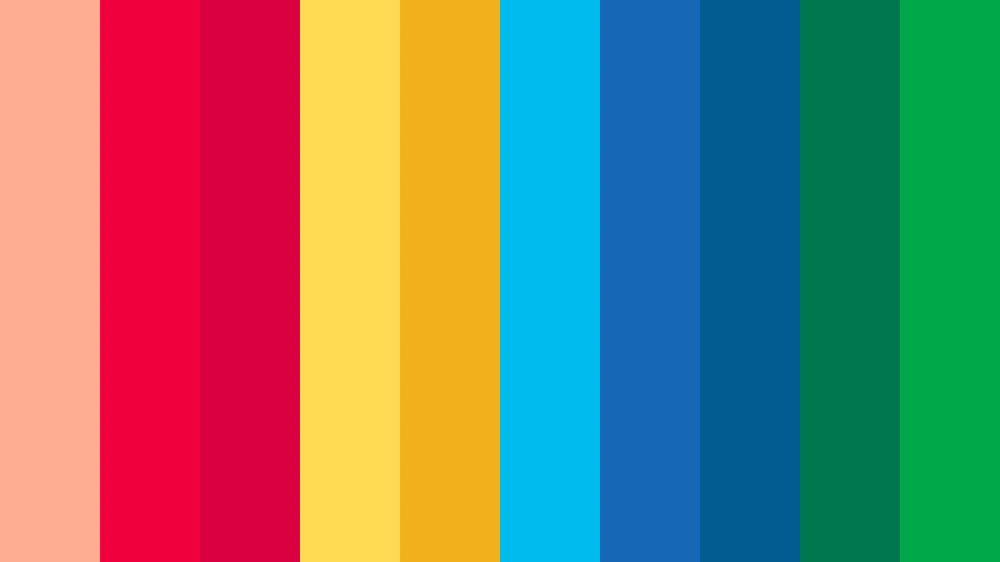

Template
Hello World
👋 🌎
Every web page is written in HTML. It tells the browser what each piece of content is: this is a heading, that is a paragraph, this is a link, a list or a table. This post covers what HTML is, the elements I use most, and how they come together on this blog.
Here we have the template for other blog posts on JustinChill.com. On this page is each HTML element available in one place. Inconsistencies in styles are easier to spot this way, and it's also a reminder to use a variety of elements in your content.
What is HTML
HTML is a markup language that defines the basic structure of web pages. Using tags and attributes, HTML tells browsers how to both process text and present it to the viewer. With HTML, you can specify which part of the document is a title, which is a list, which is an image, and so on. You can also hyperlink a word, embed an image, italicize font, and do much more.
HTML is short for Hypertext Markup Language. “Hypertext” is text that contains references to other text or pages, more commonly known as hyperlinks. Hyperlinks let you jump to another section of the page or open an entirely new page. Hyperlinks can also open a PDF, email, or multimedia, like a video or audio file.
Semantic HTML means choosing each element for what its content is, not for how it should look. A heading marked
up as an h2, rather than a paragraph styled in bold, tells browsers, search engines, screen readers
and other developers what that text is for.
- <p>: The paragraph tag signifies a paragraph of text. Anyone or any device reading this tag will understand its purpose.
- <h1>, <h2>, <h3>, etc.: Headings on the page in descending order of importance.
- <a>: A hyperlink.
- <button>: A button element.
- <strong> and <em>:
strongmarks text as important;emadds stress, the way you would lean on a word when speaking. - <ol> and <ul>: Ordered and unordered lists, respectively
- <header> and <footer>: Denote the header and footer sections of a web page.
The Stack
This blog is built using HTML and CSS.
This stack requires no maintenance, has perfect Lighthouse scores, has an instant development loop, and is an exercise in reductionism.
The entire project is in git, pushed to GitHub, so GitHub Pages is my web host. This means it's super portable: just edit, push, and your changes are live.
My requirements building this site were:
- simplicity
- performance
- long term support
The Authoring Process
Writing pure HTML + CSS requires nothing more than a simple text editor. It's platform and device agnostic and can be previewed using any web browser by opening the file.
The typography and layout design here is inspired by some of the best examples of online content I have come
across: Pudding.cool, NYTimes.com, Medium.com, etc. Each webpage is built from scratch, with ideas
copied from people far smarter than me from around the web. Wherever I could, I tried to use semantic HTML,
which means organizing content using logical elements like article and figure. It also
makes for cleaner code. 🤓
Examples of semantic code are the tags for marking up changes to text:
| Tag | Description |
|---|---|
<mark> |
This is some regular plain text, and this is some text we are highlighting using the
|
<del> |
Using the |
<ins> |
Opposite of the last one, this is text that we are indicating has been added. We do this with
the |
<s> |
This is an example of |
There are tons of simple techniques that allow typography to pop on the web. Typography is the art of typefaces, point sizes, letter-spacing (tracking), etc. The large first letter at the top of this page is one example. Another is limiting lines to about 75 characters. Otherwise, everything you read starts to look like Wikipedia and your eyes will glaze over. For a deeper dive on typography, see here.
Images

figcaption for the above image.This image spans 5 of the layout’s 7 columns. That gives the image more breathing room and breaks up the page visually.
Fonts
When designing a website you should consider fonts for three types of text: the content, the
UI, and your brand. Specifically I chose Camphor,
Camphor Light, and Playfair Display SC. I
discovered with delight that the last one mimics almost perfectly the effect created especially for a
blockquote element.
Content font
The content font has to stay easy to read for long stretches. Here that is Camphor, a clean sans-serif.line-height
and letter-spacing are vital. Play with those parameters to make the most out of your font of
choice. This site sets body text at line-height: 1.6, close to an empty line between lines of
text, and nudges letter-spacing slightly negative (letter-spacing: -0.03px) so words feel
compact.
Brand font
The purpose of this font is to enforce the presence of our brand during the navigation experience. We can use it for titles and, here and there, for some minutiae. The brand font here is Playfair Display SC, used sparingly: it draws the oversized opening quotation mark on the blockquote below.
There is no sincerer love than the love of food.
George Bernard Shaw
UI font
The font used for all the UI elements is preferably a sans-serif one. It should create contrast with the content
font.
Its color could be a little bit lighter than the one used for the main content.
It needs to be readable
given the background-color of your page
but not distracting from the main purpose of the page: reading!
You can also
use it for h2 - the titles for your paragraphs. Here the color should be the same as the one used
for the main title.
Maintaining footnotes manually can be a pain. By using CSS counters to add the numbered references in the text and an ordered list to display the actual footnotes in the footer, it becomes extremely easy.
The highlight
To highlight a word or phrase you can wrap them in a span element and set the background to a color that evokes your brand color identity. Here I am
using a simple green.
The length
A line of text should not run much past 75 characters, so our eyes are not forced to run from one side of the
page to the other. CSS Grid makes this simple: the layout has 7 columns, with two flexible 1fr
columns on each side, a 10px gutter either side of the text, and a central text column 37.5rem
wide.
The subtitle under the title uses a muted grey, so it adds information without grabbing the attention that the
title deserves. It is an h2, one level below the h1 title.
The color
Body text here is #242424 on an off-white #f9f9f9 background, a contrast ratio of
about 15:1. The dark theme flips it to #e8e8e8 on #111111, with the same contrast.
Conclusion
As always, the strict first rule of design is that there are no strict rules.
But, if you are looking for a
good template...
Uncommon thinkers reuse what common thinkers refuse ✍️
J. R. D. Tata